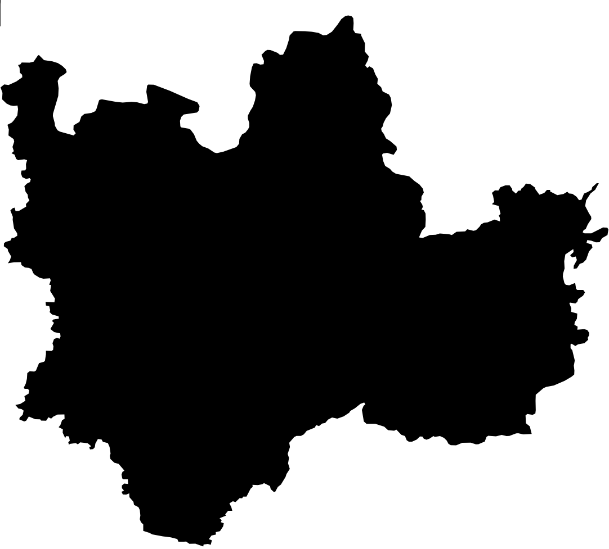

Trabalhando com APIs
PASIA - Aula P.8
DAC - ICET - Universidade Federal de Lavras
01/10/2025
Nesta aula, vamos praticar o uso de APIs em um contexto bem diferente do que vimos na aula anterior.
- Faremos isso com três tipos de APIs.
Primeiro, vamos usar APIs do IBGE (de Malhas, de Municípios e a Agregados).
- Vamos plotar mapas com informações sobre municípios brasileiros.
- Nesse processo, vamos conhecer o formato GeoJSON.
Depois vamos usar as APIs do GMail e do Gemini em nosso programa Python.
- com elas, nosso programa enviará, automaticamente, um e-mail com o mapa gerado.
- e o texto do e-mail será gerado pelo Gemini.
O objetivo é trabalhar com conceitos que não vimos na aula anterior.
- Precisaremos usar autenticação.
- Usaremos bibliotecas que encapsulam o acesso às APIs.
- Conseguiremos criar programas baseados em LLMs.
API de Dados Geográficos
A API de Malhas do IBGE permite consultar os polígonos dos municípios brasileiros em formato GeoJSON.
- Um GeoJSON é um JSON com um formato específico para representar informações geográficas.
Vamos começar fazendo uma consulta de exemplo na API de Malhas do IBGE.
- Usaremos a versão 4 da API, cuja documentação está disponível em: https://servicodados.ibge.gov.br/api/docs/malhas?versao=4
Pela documentação, vemos que existe uma consulta por município:
Para a qual devemos informar o id (ou código) do município desejado.
- Antes de implementarmos um programa Python, vamos fazer um teste no navegador.
Buscando no Google, descobri que o código IBGE de Lavras é 3138203.
- Portanto, podemos consultar o polígono de Lavras com a URL: https://servicodados.ibge.gov.br/api/v4/malhas/municipios/3138203
Com essa consulta, obtemos uma imagem (SVG) do município de Lavras.

Mas, na própria documentação da API, vemos que podemos pedir o formato GeoJSON.
- Se quisermos testar pelo navegador, precisamos acrescentar
?formato=application/vnd.geo+jsonà URL. - Já se quiséssemos fazer a consulta por código, devemos especificar o formato no cabeçalho
Accept.
Vamos testar pelo navegador para verificar como os dados são retornados.
A parte inicial dos dados retornados é mostrada abaixo:
- Vemos que é um arquivo JSON com um formato específico para dados geográficos.
Vamos destacar o que é mais importante do formato GeoJson.
{
"type": "FeatureCollection",
"features": [
{
"type": "Feature",
"geometry": {
"type": "Polygon",
"coordinates": [
[
[-44.8693, -21.2122],
[-44.8704, -21.2122],- Temos um campo
"features"que traz todos os dados geográficos. - Temos uma geometria dentro do campo
"geometry"e vemos que ela é do tipo"Polygon".
- Aqui há uma única geometria, mas poderiam ser várias.
- Por fim, temos os valores das coordenadas do polígono.
Para conseguirmos exibir esse polígono poderíamos usar a biblioteca plotly.
- Ela possui um método
scatter_geoque consegue interpretar o formato GeoJSON.
Mas vamos aproveitar para conhecer outra biblioteca interessante: a folium.
- Ela é especializada em dados geográficos e também consegue interpretar o formato GeoJSON.
Nos slides a seguir são apresentados os exercícios a serem feitos com essa ideia.
- Lembre-se de usar o arquivo
requirements.txte ambiente virtual. - Você precisará instalar, no mínimo, as bibliotecas
requests,foliumewebbrowser.
Tarefa 1.1 - Identificando um município
Faça um programa em Python que:
- Peça ao usuário o nome (ou parte do nome) de um município brasileiro.
- O programa deverá então fazer uma consulta à API de Municípios do IBGE.
- E exibir os nomes e códigos de todos os municípios que contenham o nome informado.
Tarefa 1.2 - Obtendo polígono do município
Incremente o programa do passo anterior de forma que:
- O usuário possa escolher um dos municípios listados.
- O programa deverá então fazer uma consulta à API de Malhas do IBGE.
- E salvar um arquivo HTML que mostre o polígono do município em um mapa.
Obs.: para testar, você deve abrir o arquivo HTML no navegador para ver o resultado.
Tarefa 1.3 - Exibindo resultado
Nesse passo você deve alterar o seu programa de forma que o arquivo HTML gerado seja aberto automaticamente pelo seu programa, usando o módulo webbrowser do Python.
Tarefa 1.4 - Incluindo mais municípios
Você deve agora alterar o programa de forma que o usuário possa escolher vários muncípios (quantos ele quiser) e os polígonos de todos eles sejam exibidos no mapa.
Tarefa 1.5 - Incluindo mais informações
Altere o programa para que ele use a API de Agregados do IBGE para obter o PIB per capita de cada município escolhido. E inclua o valor do PIB per capita como tooltip de cada polígono.
API do GMail
Vamos agora usar a API do GMail para que nosso programa possa enviar o arquivo HTML gerado por e-mail.
- A API do GMail é usada de forma diferente das APIs que vimos até agora.
Primeiramente, não usaremos o módulo requests.
- Em vez disso usaremos módulos Python fornecidos pela própria Google, para acessar a API do GMail.
- E, além disso, teremos que autenticar em nossa conta do Google para conseguir usar a API
Observação sobre os exercícios
As tarefas a seguir estão descritas em alto nível.
- Se necessário, use o Copilot ou o ChatGPT para entender maiores detalhes para conseguir fazer as tarefas.
Tarefa 2.1 - Configurar o Projeto no Google Cloud
- Crie um projeto no Google Cloud Console
- Ative a API do GMail
- Crie credenciais OAuth 2.0 – Desktop App
- Baixe o arquivo
credentials.json⚠️
Aviso
O arquivo credentials.json contém as credenciais da sua conta.
- ⚠️⚠️ Não compartilhe esse arquivo com ninguém! ⚠️⚠️
- Portanto, não suba em um repositório do GitHub e lembre-se de apagar ao enviar o exercício no Campus Virtual
Tarefa 2.2 - Instalar as dependências
Tarefa 2.3 - Tratar Autenticação
Para que nosso programa use a API do GMail, ele precisa de um token que é gerado a partir do arquivo de credenciais que baixamos na Tarefa 2.1.
O arquivo com o Token pode ser gerado como mostrado no exemplo abaixo.
- Na primeira execução o navegador é aberto para que você logue na sua conta.
Tarefa 2.4 - Enviar e-mail
Agora, enfim, altere seu programa Python para que ele envie, por e-mail, o arquivo HTML de mapa gerado nos exercícios da primeira parte da aula.
Você pode deixar o usuário escolher o destinatário do e-mail e testar enviando para você mesmo.
Escolha um título para o e-mail e um texto sucinto no corpo do e-mail, apenas para testes.
API do Google Gemini
Como forma de demonstrar como podemos Assistentes de IA dentro de um programa em Python
- vamos gerar o texto do corpo do e-mail usando o Gemini.
Lembre-se que existem limitações no acesso gratuito ao Gemini.
- Portanto, teste com moderação durante a aula :)
- Você pode conferir os limites de acesso aqui.
Tarefa 3.1 - Configurar a Chave de API do Gemini
Acesse https://aistudio.google.com/ e crie uma chave para acesso à API do Gemini.
Você precisará criar um projeto e uma chave de API associado a ele.
Tarefa 3.3 - Gerar texto do e-mail com o Gemini
Vamos agora alterar nosso programa Python para que o texto do corpo do e-mail seja gerado pelo Gemini.
Para isso, você precisará de um prompt que instrua o Gemini sobre o que você precisa.
- Abaixo está um exemplo, mas não precisa ser necessariamente esse.
Legal, não?
- Nessa aula vimos que podemos usar APIs através de módulos Python que as encapsulam.
- Aprendemos como autenticar o acesso a uma API.
- E ainda usamos um Assistente de IA dentro do nosso programa.